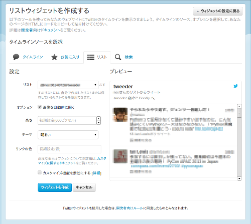

Twitter から
気になる人のツイートは Twitter リストに登録して…。
Tweeder を経由して
Tweeder は Twitter と フィードリーダーの橋渡し役。
Twitter リストからフィードを作って、フィードリーダーに渡します。
フィードリーダー へ
お気に入りのフィードリーダーで まとめてチェック。
これでもう 聞き漏らしや読み忘れの心配はありません！
設定手順は 3ステップ
面倒なユーザー登録なども必要ありません。
ステップ 1
Twitter でウィジェットを作成
Tweeder は Twitter
のウィジェットからツイート情報を取得します。
まず最初に Twitter のウィジェットを作成しましょう。
ウィジェットの種類は、下記の 4通り があります。 どの種類のウィジェットでも Tweeder へ渡すことができます。
- ユーザーウィジェット（タイムライン）
- お気に入りウィジェット
- リストウィジェット
- 検索ウィジェット

ステップ 2
ウィジェット ID を取得
ステップ 1 で作成したウィジェットの ID を Tweeder へ通知します。
Tweeder で必要となるウィジェットの ID（18桁の数字） は、ウィジェットの編集ページで確認することができます。
方法 1
URL で確認する
ブラウザのアドレス欄に表示されている URL に ウィジェット ID が含まれています。
https://twitter.com/settings/widgets/123456789012345678/edit...
方法 2
貼り付け用の HTML コードで確認する
ウィジェット貼り付け用の HTML コードに ウィジェット ID が含まれています。
<a class="twitter-timeline" href="https://twitter.com/search?q=..."
data-widget-id="123456789012345678">○○ に関するツイート</a>
<script>!function(...
ウィジェット ID の入力
ステップ 3
フィードリーダーへ登録
ステップ 2 のウィジェット ID が入力されていません。
次の URL をフィードリーダーへ登録してください。
Feedly に登録する場合には、次の Follow ボタンで簡単に登録できます。